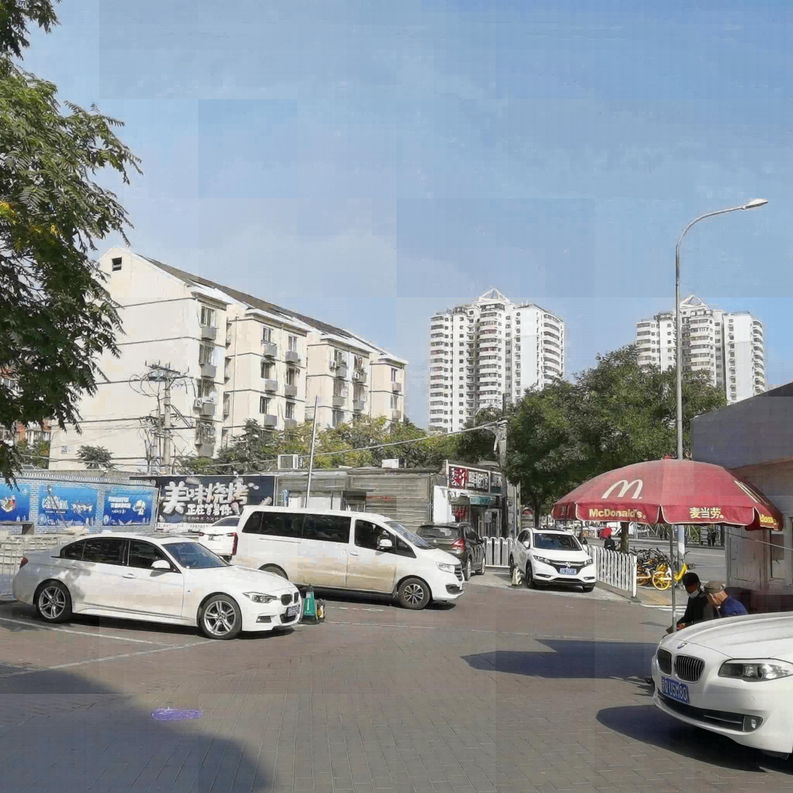
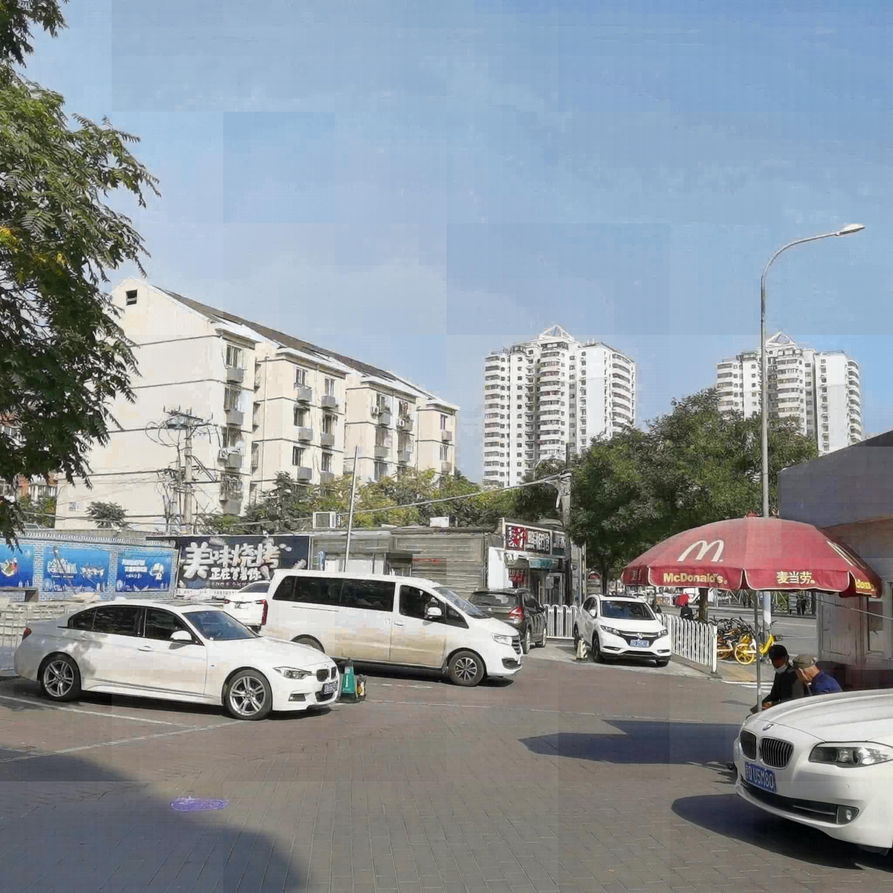

Tokenize Image Patches: Global Context Fusion for Effective Haze Removal in Large Images

- School of Mechatronical Engineering, Beijing Institute of Technology1
Abstract
Global contextual information and local detail features are essential for haze removal tasks. Deep learning models perform well on small, low-resolution images, but they encounter difficulties with large, high-resolution ones due to GPU memory limitations. As a compromise, they often resort to image slicing or downsampling. The former diminishes global information, while the latter discards high-frequency details. To address these challenges, we propose DehazeXL, a haze removal method that effectively balances global context and local feature extraction, enabling end-to-end modeling of large images on mainstream GPU hardware. Additionally, to evaluate the efficiency of global context utilization in haze removal performance, we design a visual attribution method tailored to the characteristics of haze removal tasks. Finally, recognizing the lack of benchmark datasets for haze removal in large images, we have developed an ultra-high-resolution haze removal dataset (8KDehaze) to support model training and testing. It includes 10000 pairs of clear and hazy remote sensing images, each sized at 8192 × 8192 pixels. Extensive experiments demonstrate that DehazeXL can infer images up to 10240 × 10240 pixels with only 21 GB of memory, achieving state-of-the-art results among all evaluated methods. The source code and experimental dataset are available at https://github.com/CastleChen339/DehazeXL.
DehazeXL
Overall architecture of the proposed model. It begins by partitioning the hazy image into uniform-sized patches, which are then encoded into tokens by the Encoder. The Bottleneck injects global information into each token, enhancing the contextual representation. Subsequently, the Decoder reconstructs the tokens back into image patches, forming the final output image. Notably, to minimize memory consumption, both the Encoder and Decoder employ an asynchronous processing strategy, handling the input in multiple mini-batches sequentially rather than simultaneously. This design optimizes memory efficiency while ensuring effective haze removal.
Results
DehazeXL is an end-to-end haze removal method that effectively integrates global information interaction with local details extraction. It is capable of directly inferring large images without incurring quadratic increases in GPU memory usage. DehazeXL demonstrates a reduction in memory usage by approximately 65%-80% when processing large images compared to other methods. Notably, when employing FP16 format for inference, DehazeXL can process 10,240 × 10,240 pixel images with only 21 GB of memory.
 

Dehazing Attribution Map
To investigate the impact of global information utilization efficiency on dehazing performance, we develop a visual attribution method specifically tailored for haze removal tasks. By analyzing the contribution of each region, we can gain insights into which features are most influential in haze removal, thereby enhancing our understanding of the underlying processes involved. This approach not only facilitates the optimization of model performance but also provides a framework for interpreting results, which is crucial for advancing research in the field.
Citation
If you find this paper useful in your research, please consider citing:
@inproceedings{chen2025token,
title={Tokenize Image Patches: Global Context Fusion for Effective Haze Removal in Large Images},
author={Jiuchen Chen, Xinyu Yan, Qizhi Xu, and Kaiqi Li},
booktitle={Proceedings of the IEEE Conference on Computer Vision and Pattern Recognition},
year={2025}
}
@article{chen2025tokenize,
title={Tokenize Image Patches: Global Context Fusion for Effective Haze Removal in Large Images},
author={Chen, Jiuchen and Yan, Xinyu and Xu, Qizhi and Li, Kaiqi},
journal={arXiv preprint arXiv:2504.09621},
year={2025}
}
Acknowledgements
We would like to thank the authors of bair-climate-initiative/xT for their inspiring work, which has been a valuable reference for our research.